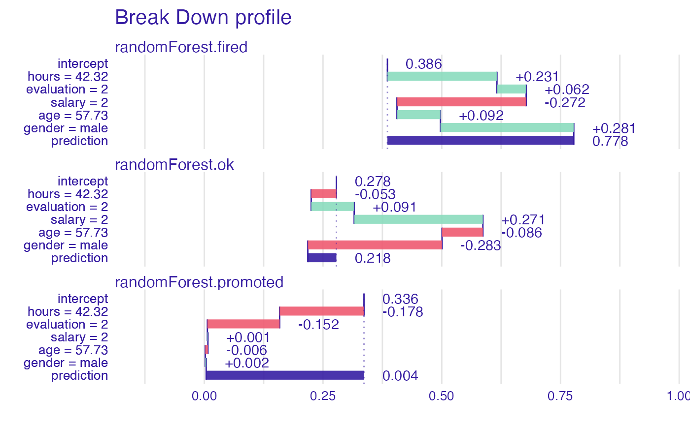
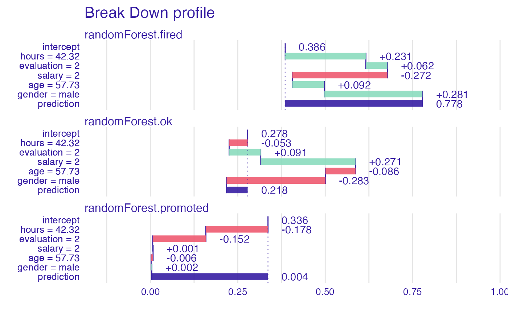

This function finds Variable Attributions via Sequential Variable Conditioning.
It calls either local_attributions for additive attributions
or local_interactions for attributions with interactions.
break_down(x, ..., interactions = FALSE)
# S3 method for explainer
break_down(x, new_observation, ..., interactions = FALSE)
# S3 method for default
break_down(
x,
data,
predict_function = predict,
new_observation,
keep_distributions = FALSE,
order = NULL,
label = class(x)[1],
...,
interactions = FALSE
)Arguments
- x
an explainer created with function
explainor a model.- ...
parameters passed to
local_*functions.- interactions
shall interactions be included?
- new_observation
a new observation with columns that correspond to variables used in the model.
- data
validation dataset, will be extracted from
xif it is an explainer.- predict_function
predict function, will be extracted from
xif it's an explainer.- keep_distributions
if
TRUE, then distribution of partial predictions is stored and can be plotted with the genericplot().- order
if not
NULL, then it will be a fixed order of variables. It can be a numeric vector or vector with names of variables.- label
name of the model. By default it is extracted from the 'class' attribute of the model.
Value
an object of the break_down class.
References
Explanatory Model Analysis. Explore, Explain and Examine Predictive Models. https://ema.drwhy.ai
See also
Examples
library("DALEX")
#> Welcome to DALEX (version: 2.3.0).
#> Find examples and detailed introduction at: http://ema.drwhy.ai/
#> Additional features will be available after installation of: ggpubr.
#> Use 'install_dependencies()' to get all suggested dependencies
library("iBreakDown")
set.seed(1313)
model_titanic_glm <- glm(survived ~ gender + age + fare,
data = titanic_imputed, family = "binomial")
explain_titanic_glm <- explain(model_titanic_glm,
data = titanic_imputed,
y = titanic_imputed$survived,
label = "glm")
#> Preparation of a new explainer is initiated
#> -> model label : glm
#> -> data : 2207 rows 8 cols
#> -> target variable : 2207 values
#> -> predict function : yhat.glm will be used ( default )
#> -> predicted values : No value for predict function target column. ( default )
#> -> model_info : package stats , ver. 4.1.2 , task classification ( default )
#> -> predicted values : numerical, min = 0.1490412 , mean = 0.3221568 , max = 0.9878987
#> -> residual function : difference between y and yhat ( default )
#> -> residuals : numerical, min = -0.8898433 , mean = 4.198546e-13 , max = 0.8448637
#> A new explainer has been created!
bd_glm <- break_down(explain_titanic_glm, titanic_imputed[1, ])
bd_glm
#> contribution
#> glm: intercept 0.322
#> glm: gender = male -0.107
#> glm: fare = 7.11 -0.018
#> glm: age = 42 -0.014
#> glm: class = 3rd 0.000
#> glm: embarked = Southampton 0.000
#> glm: sibsp = 0 0.000
#> glm: parch = 0 0.000
#> glm: survived = 0 0.000
#> glm: prediction 0.183
plot(bd_glm, max_features = 3)
 # \dontrun{
## Not run:
library("randomForest")
#> randomForest 4.7-1
#> Type rfNews() to see new features/changes/bug fixes.
set.seed(1313)
# example with interaction
# classification for HR data
model <- randomForest(status ~ . , data = HR)
new_observation <- HR_test[1,]
explainer_rf <- explain(model,
data = HR[1:1000,1:5])
#> Preparation of a new explainer is initiated
#> -> model label : randomForest ( default )
#> -> data : 1000 rows 5 cols
#> -> target variable : not specified! ( WARNING )
#> -> predict function : yhat.randomForest will be used ( default )
#> -> predicted values : No value for predict function target column. ( default )
#> -> model_info : package randomForest , ver. 4.7.1 , task multiclass ( default )
#> -> model_info : Model info detected multiclass task but 'y' is a NULL . ( WARNING )
#> -> model_info : By deafult multiclass tasks supports only factor 'y' parameter.
#> -> model_info : Consider changing to a factor vector with true class names.
#> -> model_info : Otherwise I will not be able to calculate residuals or loss function.
#> -> predicted values : predict function returns multiple columns: 3 ( default )
#> -> residual function : difference between 1 and probability of true class ( default )
#> A new explainer has been created!
bd_rf <- break_down(explainer_rf,
new_observation)
head(bd_rf)
#> contribution
#> randomForest.fired: intercept 0.386
#> randomForest.fired: hours = 42.32 0.231
#> randomForest.fired: evaluation = 2 0.062
#> randomForest.fired: salary = 2 -0.272
#> randomForest.fired: age = 57.73 0.092
#> randomForest.fired: gender = male 0.281
plot(bd_rf)

# }
# \dontrun{
## Not run:
library("randomForest")
#> randomForest 4.7-1
#> Type rfNews() to see new features/changes/bug fixes.
set.seed(1313)
# example with interaction
# classification for HR data
model <- randomForest(status ~ . , data = HR)
new_observation <- HR_test[1,]
explainer_rf <- explain(model,
data = HR[1:1000,1:5])
#> Preparation of a new explainer is initiated
#> -> model label : randomForest ( default )
#> -> data : 1000 rows 5 cols
#> -> target variable : not specified! ( WARNING )
#> -> predict function : yhat.randomForest will be used ( default )
#> -> predicted values : No value for predict function target column. ( default )
#> -> model_info : package randomForest , ver. 4.7.1 , task multiclass ( default )
#> -> model_info : Model info detected multiclass task but 'y' is a NULL . ( WARNING )
#> -> model_info : By deafult multiclass tasks supports only factor 'y' parameter.
#> -> model_info : Consider changing to a factor vector with true class names.
#> -> model_info : Otherwise I will not be able to calculate residuals or loss function.
#> -> predicted values : predict function returns multiple columns: 3 ( default )
#> -> residual function : difference between 1 and probability of true class ( default )
#> A new explainer has been created!
bd_rf <- break_down(explainer_rf,
new_observation)
head(bd_rf)
#> contribution
#> randomForest.fired: intercept 0.386
#> randomForest.fired: hours = 42.32 0.231
#> randomForest.fired: evaluation = 2 0.062
#> randomForest.fired: salary = 2 -0.272
#> randomForest.fired: age = 57.73 0.092
#> randomForest.fired: gender = male 0.281
plot(bd_rf)

# }